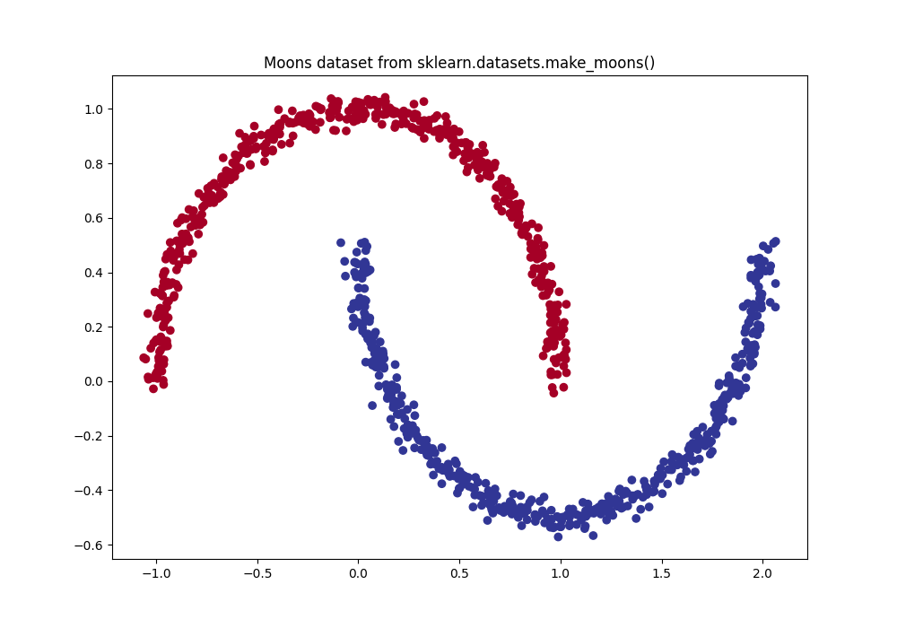
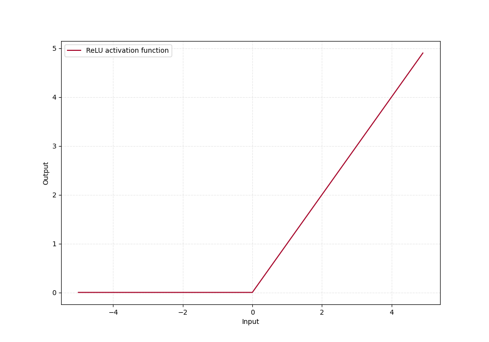
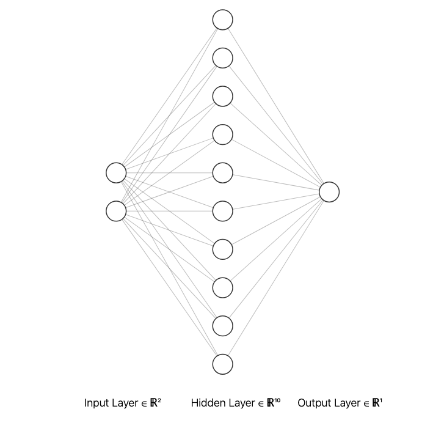
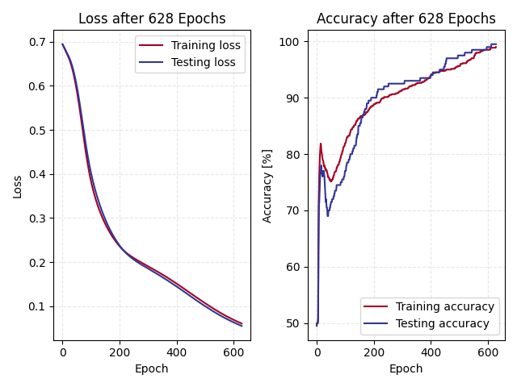
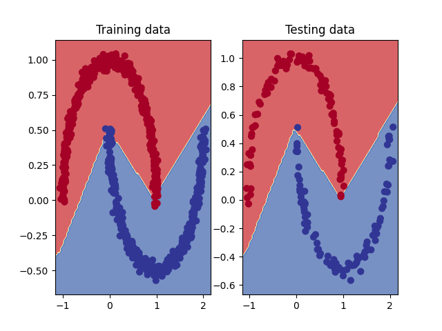
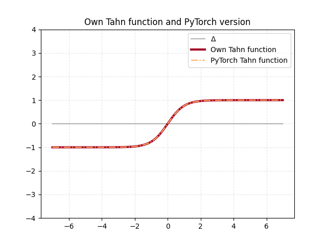

PyTorch Neural Network Classification
In this chapter will a classification model be built, which will be try to classify non linear data that is downloaded from sci-kit learn. This dataset belong to the many toy datasets that sci-kit learn has.
Exercise 1
Make a binary classification dataset with sklearns make_moons() method:. For consistency, the dataset should have 1000 samples and a random state of 42 Turn the data into PyTorch tensors. Split data into 80/20 training and testing sets
To load in the dataset will be done with the make_moons() which is
composed by two interleaving half circles. This is loaded from sci-kit learns
datasets module as seen in the code snippet. I set the random seed
to 42 as instructed and also add some noise to the data.
To convert the data from numpy to tensors I use the from_numpy() method in PyTorch
and then split the data into training and testing data from another function
in sci-kit learn, called train_test_split() this function splits the data
randomly and can be seen in the snippet below
self._X = torch.from_numpy(self.X).type(torch.float)
self._y = torch.from_numpy(self.y).type(torch.float)
# set training and testing sets
self.logger.info("Divide dataset into 80/20 train test split, randomly")
(self.X_train, self.X_test, self.y_train, self.y_test) = train_test_split(
self._X,
self._y,
test_size=0.2,
random_state=42
)
I then chose to plot the full dataset to visualize the data, which always is good to do.

Exercise 2
Build a model by subclassing nn.Module that incorporates non-linear activation functions and is capable of fitting the data from exercise 1.
In this exercise I will build a model that will be able to make the classification of the make moons dataset by labeling correctly. One very important insight in this exercise is that this data differs in several way in comparison to the data I created in Chapter 1. Firstly, it is a classification problem, and not a regression problem. Secondly the data is non-linear, which mean that a model similar to the one developed in Chapter 1 will not be sufficient to classify the data.
This mean that we have to include non-linearity in our neural network. PyTorch have lots of functions that does this, and some work better than others, depending on the dataset that the model is built on. The one used in this exercise is the Rectified Linear Unit(ReLU) function with torch.nn.ReLU, which can be seen in the figure below

The model setup is very similar to the one model developed in Chapter 1, but with a few important changes. I now is setting up in total of three layers, which essentially consist of:
- Input layer with two input features (x, y) that has 10 output features
- One hidden layer with 10 input features and 10 output features
- Output layer with 10 input features and 1 output feature (the classification)
As seen in the __init__ constructor in the snippet below. Be also define the
non linear activation function, nn.ReLU() here.
The forward propagation through the neural network is constructed in the forward() method
as seen in the snippet, where the outputs between each layer goes through the ReLU activation
function. A visual representation of this neural network can be seen in the figure below

Exercise 3
As for the model developed in Chapter 1 we have to define a loss and optimizer function.
For binary classification problems like this will the nn.BCEWithLogitsLoss()
loss function. This measures the Binary Cross Entropy loss between the target and input probabilities. This loss function
outputs the logits from the neural network. Logits is the raw outputs from the last layer, and have to be transformed
to our labels in order for us to visualize how well our model is predicting. The optimizer function
(which in many cases is standard) used here is again the nn.optim.SGD() which implements the stochastic gradient descent
Exercise 4
Create a training and testing loop to fit the model you created in 2 to the data you created in 1.
As for the model trained in Chapter 1 we follow the standard pattern with some extra calculations as shown in the code snippet below:
- Putting the model in training mode
- Running training data through the neural net and calculating predictions from logits
- Optimizer zero gradient
- Back propagate
- Step optimizer
- Evaluate
I chose to evaluate the model with both training and testing data for each epoch, this because we wanted
to finish the training of the model when it reached atleast 99% accuracy. To do this I used TorchMetrics
and the method torchmetrics.functional.accuracy(). To illustrate how the loss and accuracy evolves through
the training of this model I graphed out the loss and accuracy curves as seen in the figure below

Exercise 5
Make predictions with your trained model and plot them using the plot_decision_boundary() function created in this notebook.
To further visualize how well trained our model is, and how well it can make predictions can a figure that plots the
boundaries of the decision be done. For this is a resource from
GitHub used called plot_decision_boundary(),
which I modified to suit my style of using axes to plot which can be seen in the
code snippet below.
To use this function I start by initializing a figure object and then calling
the modified plot_decision_boudary() function with the axis, model, and test data.
Below is this plot for the model trained here.

Exercise 6
Replicate the Tanh (hyperbolic tangent) activation function in pure PyTorch.
Another activation function that is used in classification problems is the Tanh function which exist in the PyTorch library. In this exercise I am creating it myself in pure PyTorch. See the code snippet below for the code and the figure below the snippet for an comparison between PyTorchs own, and the one I developed.
